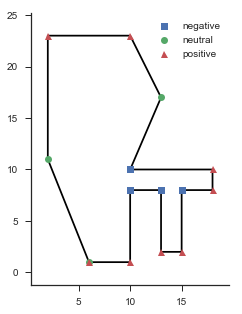
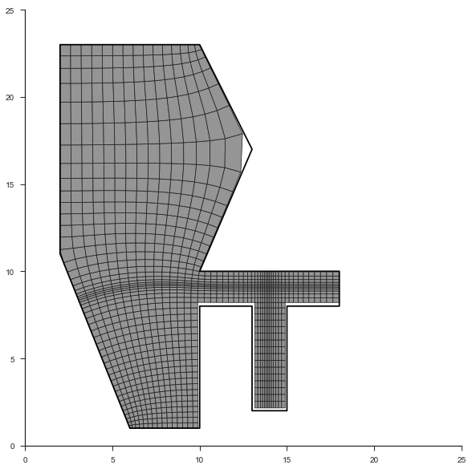

Grid Generation Basics¶
This section will cover:
- Loading and visualizing boundary data
- Generating visualizing a basic grid
- Adding focus to the grid
This is sorely lacking in detail and explanation. For more help on this matter, see the pygridgen documentation.
In [1]:
%matplotlib inline
import warnings
warnings.simplefilter('ignore')
import numpy as np
import matplotlib.pyplot as plt
import pandas
import pygridgen as pgg
import pygridtools as pgt
import seaborn
clear_bkgd = {'axes.facecolor':'none', 'figure.facecolor':'none'}
palette = seaborn.color_palette(palette='deep')
seaborn.set(style='ticks', context='notebook', rc=clear_bkgd)
Loading and plotting the boundary data¶
In [2]:
csvfile = "basic_data/boundary.csv"
!cat {csvfile}
x,y,beta
6,1,1
2,11,0
2,23,1
10,23,1
13,17,0
10,10,-1
18,10,1
18,8,1
15,8,-1
15,2,1
13,2,1
13,8,-1
10,8,-1
10,1,1
6,1,0
In [3]:
boundary = pandas.read_csv(csvfile)
boundary['reach'] = 'My Reach'
fig, ax = plt.subplots(figsize=(5, 5), subplot_kw={'aspect':'equal'})
fig = pgt.viz.plot_domain(data=boundary, domain_x='x', domain_y='y', beta='beta', ax=ax)
seaborn.despine(ax=ax)

Generating a grid with pygridgen, plotting with pygridtools¶
In [4]:
grid = pgg.Gridgen(boundary.x, boundary.y, boundary.beta, shape=(50,50), ul_idx=2)
fig, ax = plt.subplots(figsize=(10, 10), subplot_kw={'aspect':'equal'})
fig = pgt.viz.plot_cells(grid.x, grid.y, ax=ax)
fig = pgt.viz.plot_domain(data=boundary, domain_x='x', domain_y='y', beta=None, ax=ax)
ax.set_xlim([0, 25])
ax.set_ylim([0, 25])
seaborn.despine(ax=ax)

Using focus to refine and coarsen portions of the grid¶
In [5]:
focus = pgg.Focus()
focus.add_focus(0.90, 'y', factor=0.5, extent=0.05)
focus.add_focus(0.50, 'y', factor=5, extent=0.1)
focus.add_focus(0.65, 'x', factor=4, extent=0.2)
grid.focus = focus
grid.generate_grid()
fig, ax = plt.subplots(figsize=(10, 10), subplot_kw={'aspect':'equal'})
fig = pgt.viz.plot_cells(grid.x, grid.y, ax=ax)
fig = pgt.viz.plot_domain(data=boundary, domain_x='x', domain_y='y', beta=None, ax=ax)
ax.set_xlim([0, 25])
ax.set_ylim([0, 25])
seaborn.despine(ax=ax)
